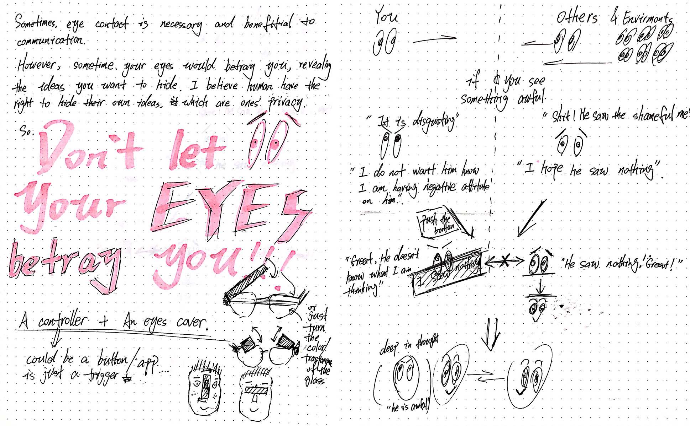

"I saw nothing" :
Eyes are the windows of your soul. Eyes reflect your inner world honestly. Such honesty involved in eye contact is beneficial to communication. However, somethings it would betray you when you are trying to prevent your thought from being percepted by others, which could probably harm both of you.
I believe one owns the right to control their thoughts and decide whether they should be perceived by others. So I try to design a recreational device to solve this problem drolly and make people consider this problem.
